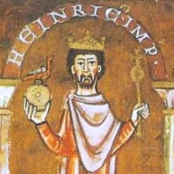

|
Charlemagne
|
|
742 - 814 |
-
Charlemagne, known as Charles the Great, was a Frankish king
who expanded his realm to become the first Holy Roman Emperor.
His reign marked a significant cultural and political revival
known as the Carolingian Renaissance. He promoted education
and Christianity across his empire, establishing a legacy that
influenced European history for centuries. His unification of
much of Western Europe laid the groundwork for the future
nation-states of France and Germany.
|
|
Otto I
|
|
912 - 973 |
-
Otto I, also known as Otto the Great, was the first emperor of
the Holy Roman Empire and a pivotal figure in the
consolidation of Germany. His reign saw the strengthening of
royal authority, particularly through alliances with the
church. He is noted for his military campaigns against the
Magyars and his efforts to unify the Germanic tribes. Otto's
coronation in 962 by the Pope established a precedent for the
intertwining of imperial and papal authority.
|
|
Henry IV
|

|
1050 - 1106 |
-
Henry IV was a significant figure during the Investiture
Controversy, a conflict with Pope Gregory VII over the
appointment of bishops. His reign is characterized by
political strife, including his excommunication and subsequent
penance at Canossa, symbolizing the struggle between church
and state. Despite his challenges, Henry's reign also saw
efforts to strengthen the empire's central authority and his
involvement in various military campaigns to defend the
empire's interests.
|
|
Frederick I (Barbarossa)
|
|
1122 - 1190 |
-
Frederick I, known as Barbarossa, was a powerful emperor
renowned for his charisma and military prowess. He sought to
restore the glory of the Empire through numerous military
campaigns in Italy, where he aimed to assert imperial
authority over the wealthy city-states. His reign was marked
by conflicts with the papacy, particularly with Pope Alexander
III, which highlighted the ongoing struggle for power between
secular and religious authorities in medieval Europe.
Frederick's legacy also includes significant legal reforms and
an emphasis on the rule of law.
|
|
Charles V
|
|
1500 - 1558 |
-
Charles V was one of the most powerful rulers of the 16th
century, governing an empire that spanned Europe and the
Americas. He faced numerous challenges, including the rise of
Protestantism led by figures such as Martin Luther. Charles
struggled to maintain religious unity within his realm while
dealing with external threats from France and the Ottoman
Empire. His abdication in 1556 marked a significant moment in
European history, leading to the eventual fragmentation of the
Holy Roman Empire and setting the stage for the modern
nation-state system.
|